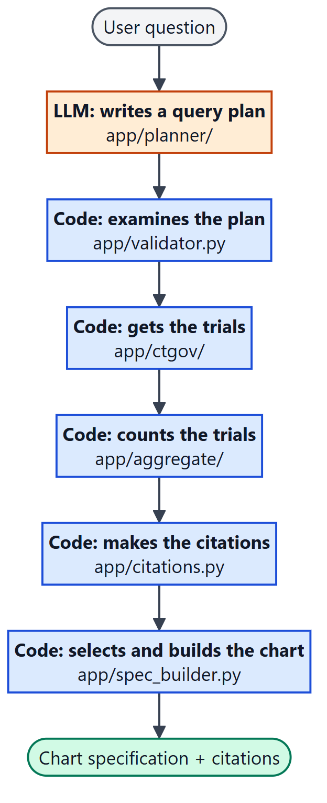
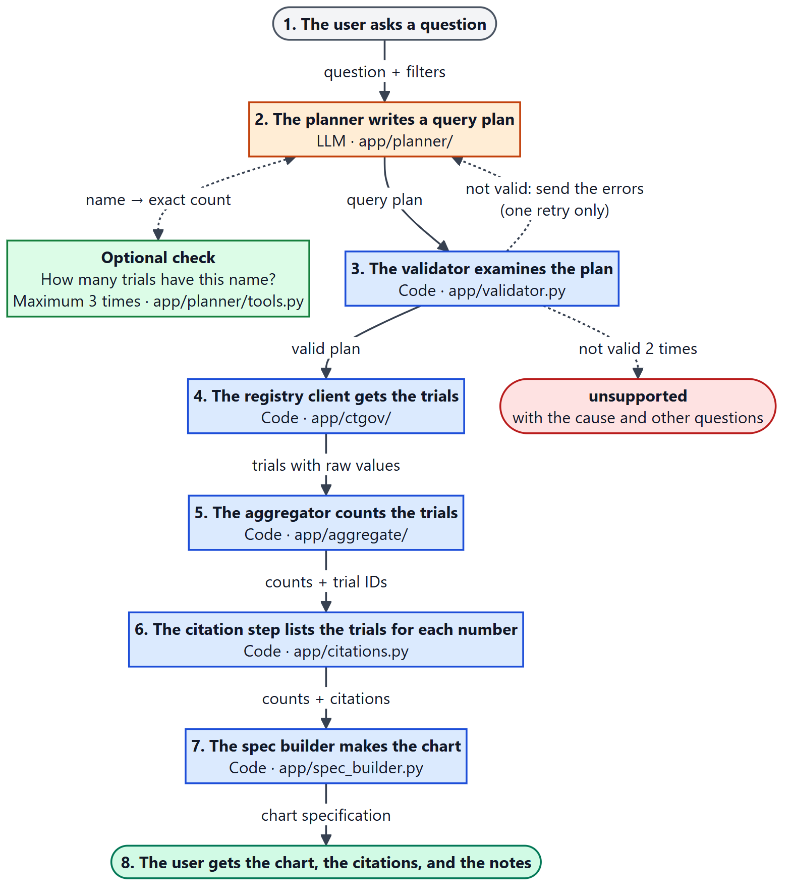
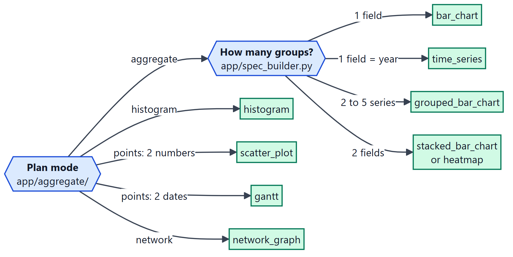
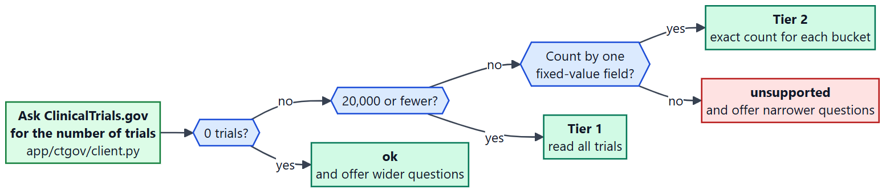
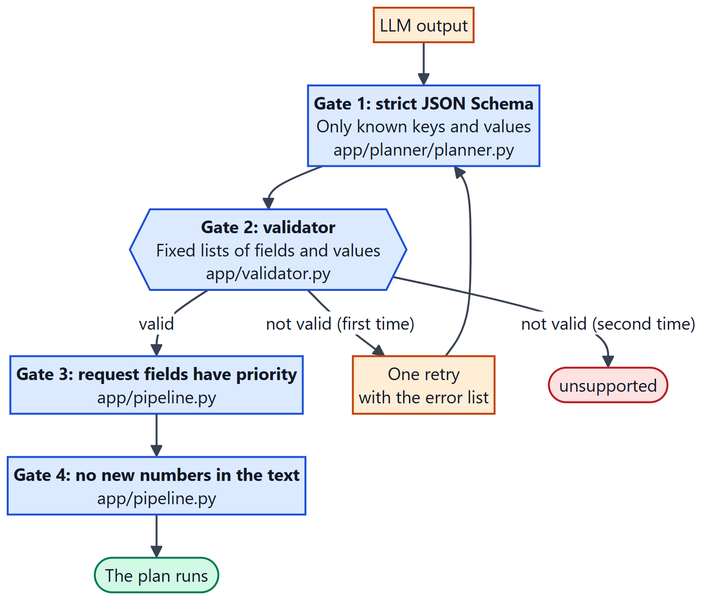
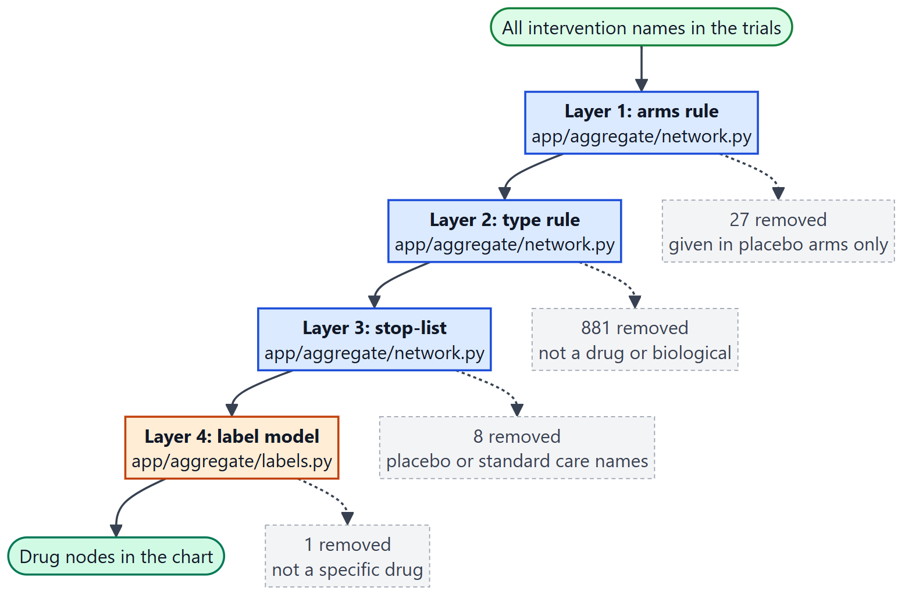
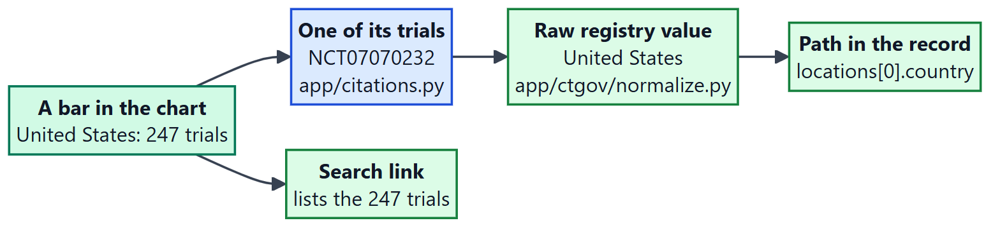
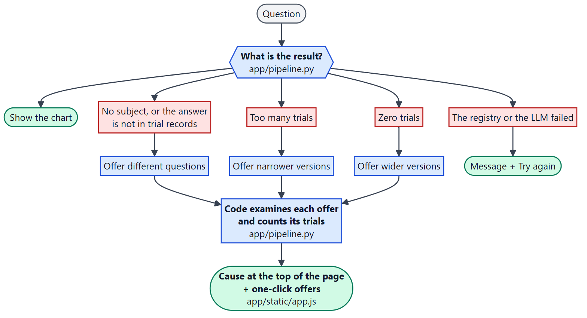

ClinicalTrials.gov agent: design diagrams
LLM step
Code step
Registry data or good result
Refusal or failure
User, or removed item
Diagram 1. Who does what
Files: app/planner/ app/validator.py app/ctgov/ app/aggregate/ app/citations.py app/spec_builder.py

How to read it: Read from top to bottom. The LLM does one step (orange). Code does all other steps (blue).
Diagram 2. The life of one request
Files: app/pipeline.py app/planner/ app/validator.py app/ctgov/ app/aggregate/ app/citations.py app/spec_builder.py

How to read it: Read the numbers 1 to 8 from top to bottom. The text on each arrow is the data that goes to the next step. A dotted arrow is a check or a retry.
Diagram 3. From the plan to the chart type
Files: app/aggregate/ app/spec_builder.py

How to read it: Start at "Plan mode" on the left. Follow one arrow to find the chart type (green).
Diagram 4. How many trials can the service read?
Files: app/ctgov/client.py app/pipeline.py

How to read it: Start on the left. Answer each question with yes or no. Green is an answer. Red is a refusal with offers.
Diagram 5. The gates that the LLM output must pass
Files: app/planner/planner.py app/validator.py app/pipeline.py

How to read it: Read from top to bottom. The plan runs only after it passes all four gates.
Diagram 6. How a network removes items that are not drugs
Files: app/aggregate/network.py app/aggregate/labels.py

How to read it: Read from top to bottom. Each layer removes some names (gray boxes). The counts are from the glioblastoma example.
Diagram 7. From a bar to the trial record
Files: app/citations.py app/ctgov/normalize.py

How to read it: Start at the bar on the left. Each arrow goes one step nearer to the source record.
Diagram 8. From a failure to the next step
Files: app/pipeline.py app/static/app.js

How to read it: Read from top to bottom. Each result that is not a chart ends with a next step for the user.